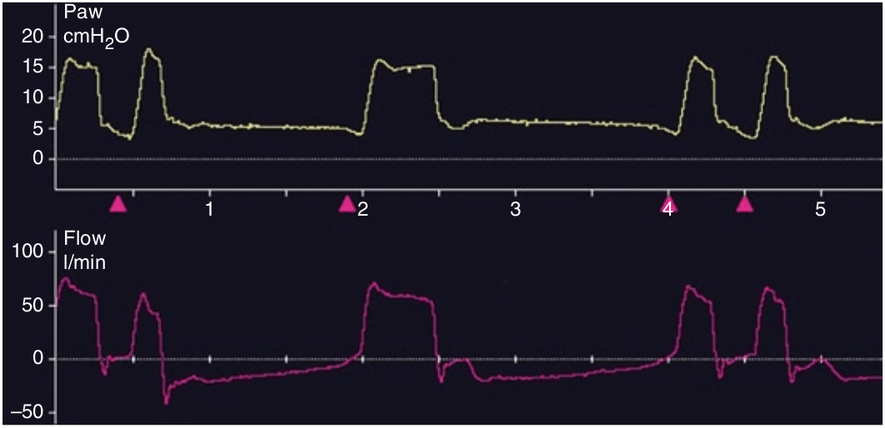

ترایگر دوبل عبارت است از دو تنفس ترایگر شده توسط بیمار بدون وجود بازدم بین آن دو. ترایگر دوبل را می توان در منحنی فشار و شدت جریان مشاهده نمود. در مواردی که بیمار تلاش دمی قدرتمندی انجام میدهد و سایکل زودرس روی میدهد امکان بروز ترایگر دوبل وجود دارد.

ترایگر دوبل عبارت است از:
۱ - یک تنفس ترایگر شده بوسیله ونتیلاتور و سپس یک تنفس ترایگر شده توسط بیمار
۲ - یک تنفس ترایگر شده بوسیله بیمار و سپس یک تنفس اتوترایگر
۳ - یک تنفس ترایگر شده بوسیله ونتیلاتور و سپس یک تنفس اتوترایگر
۴ - دو تنفس ترایگر شده توسط بیمار بدون وجود بازدم بین آنها
۵ - همراه است با سایکل تاخیری